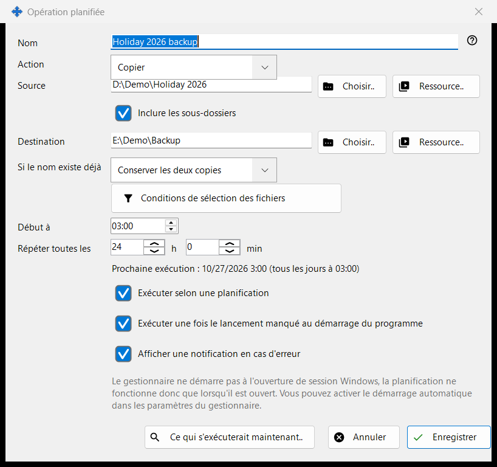
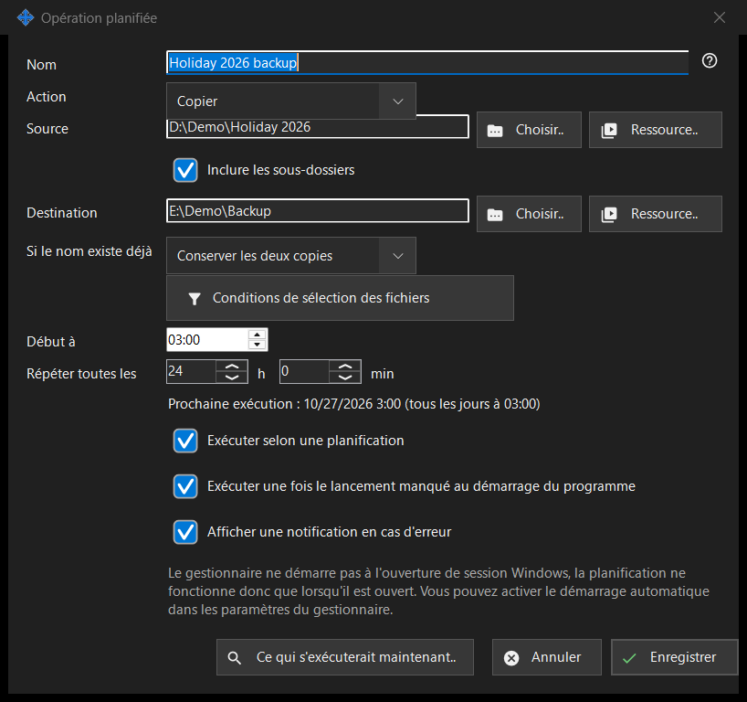

Opération planifiée
Objectif
Modifie une opération sur fichiers planifiée : copier, déplacer, supprimer ou archiver des fichiers d'une source vers une destination selon une planification répétée. Les opérations planifiées sur les fichiers s'installent avec Share Manager - un seul paquet, sans téléchargement séparé et sans service Windows - et s'exécutent tant que Share Manager fonctionne dans votre session ouverte. Elles n'ont besoin ni de partage de dossiers, ni de serveur, ni de port ouvert, ni de droits d'administrateur. Elle s'ouvre depuis «Nouvelle..» ou «Modifier..» dans la fenêtre «Opérations planifiées» et sur la page «Opérations sur fichiers planifiées» des réglages de Share Manager, et depuis l'élément du menu de dossier de la visionneuse «Planifier une opération pour ce dossier..», qui renseigne ce dossier comme source.


Dans cet ordre
- Saisissez un Nom et choisissez l'Action.
- Définissez la Source et, pour copier, déplacer et archiver, la Destination, avec «Choisir..», «Ressource..» ou «Via Google Drive».
- Pour copier et déplacer, choisissez ce qui se passe «Si le nom existe déjà».
- Ouvrez «Conditions de sélection des fichiers» pour restreindre les fichiers.
- Réglez «Début à» et «Répéter toutes les» et gardez «Exécuter selon une planification» cochée.
- Vérifiez «Ce qui s'exécuterait maintenant..» et cliquez sur «Enregistrer».
Les éléments
Premiers pas
Ouvrez la fenêtre «Opérations planifiées» depuis le menu de l'icône de Share Manager dans la zone de notification, depuis l'élément «Opérations planifiées..» du menu de dossier de la visionneuse (il est présent pour toute liste de fichiers) ou avec une touche que vous attribuez à la commande «Opérations planifiées» de la visionneuse dans ses réglages de raccourcis ; par défaut, elle n'a pas de touche. La même liste se trouve sur la page «Opérations sur fichiers planifiées» des réglages de Share Manager ; le lien «Ouvrir dans une fenêtre séparée..» l'ouvre dans une fenêtre à part. Une première opération sans risque : cliquez sur «Nouvelle..», choisissez la copie, prenez un dossier contenant quelques fichiers de test comme Source et un dossier vide comme Destination, réglez «Répéter toutes les», gardez «Exécuter selon une planification» cochée, regardez «Ce qui s'exécuterait maintenant..» (cela liste les fichiers et ne modifie rien) et cliquez sur «Enregistrer». Les opérations ne s'exécutent que tant que «Exécuter les opérations planifiées sur cet ordinateur» est coché dans la fenêtre «Opérations planifiées» ; si vous le décochez, toutes les planifications s'arrêtent et «Exécuter maintenant» fonctionne toujours à la main. Share Manager doit être en cours d'exécution : le lien «Ouvrir le paramètre de démarrage automatique» mène à son démarrage à l'ouverture de session Windows. Tant que le PC est en veille ou que Share Manager est fermé, rien ne s'exécute ; au démarrage suivant, une exécution manquée a lieu une fois si «Exécuter une fois le lancement manqué au démarrage du programme» est cochée. «Historique..» montre chaque exécution.
Action et conflits de nom
L'Action est Copier, Déplacer, Supprimer ou Archiver, et la fenêtre n'affiche que les lignes dont cette action a besoin : Supprimer n'a pas de Destination ; «Si le nom existe déjà» (Ignorer, Remplacer, Conserver les deux copies) n'apparaît que pour Copier et Déplacer ; «Supprimer les fichiers d'origine après vérification de l'archive» n'apparaît que pour Archiver et ne supprime les originaux qu'une fois l'archive relue et vérifiée.
Source et destination
Saisissez un chemin complet ou cliquez sur «Choisir..». «Ressource..» choisit un serveur SFTP ou un dossier réseau dans la liste des ressources de la visionneuse et n'est pas proposée pour Archiver, qui n'accepte que les dossiers ordinaires et Google Drive. «Via Google Drive» n'apparaît que si vous êtes connecté à Drive ou si ce côté l'utilise déjà. Quand «Inclure les sous-dossiers» est désactivée, seuls les fichiers du dossier source lui-même sont traités. «Enregistrer» refuse les dossiers système et de programmes, ainsi qu'une destination identique à la source ou située à l'intérieur, et indique ce qui ne va pas.
Via Google Drive
«Via Google Drive» ouvre une petite fenêtre qui indique ce que signifie ce côté. Comme source, elle propose «Ce que les autres appareils envoient à ce PC» et les dossiers que publient vos autres appareils ; comme destination, «N'importe lequel de mes appareils» et chacun de vos appareils par son nom. Les fichiers destinés à une destination passent par paquets via votre propre Google Drive et arrivent sur l'appareil quand il les récupère ; les sous-dossiers ne sont pas conservés. Les fichiers d'une source arrivent dans un dossier temporaire de ce PC et rejoignent la destination sous leur nom de base, sans sous-dossiers. Un paquet ne quitte votre Google Drive qu'une fois tous ses fichiers arrivés à destination, et un déplacement ne retire un original qu'une fois son paquet sur votre Google Drive. Dans le dossier d'un appareil, une exécution prend ce qui a changé depuis la dernière exécution complète. Un seul côté peut utiliser Google Drive ; pour une source via Google Drive, «Enregistrer» refuse la suppression et les conditions d'âge de fichier, et «Ce qui s'exécuterait maintenant..» prévient que ce qui arrive via Google Drive n'est connu qu'à l'exécution. Si Google Drive ne répond pas, l'exécution est ignorée et la suivante réessaie. Le manque d'espace sur Google Drive, une connexion perdue ou un refus de l'appareil arrêtent l'exécution, et l'historique en donne la raison.
Suppression de fichiers
Quand des fichiers vont être supprimés (Supprimer, ou Archiver avec l'option des originaux), une ligne «Supprimer : ..» indique où ils vont : dans la Corbeille, ou définitivement avec la raison, par exemple qu'un disque réseau ou amovible n'a pas de Corbeille. Pour une telle opération, Entrée n'enregistre pas ; cliquez sur «Enregistrer» délibérément. Une exécution planifiée ne pose jamais de question et consigne où sont allés les fichiers supprimés.
Conditions de sélection des fichiers
Le panneau s'ouvre de lui-même quand les conditions diffèrent des valeurs par défaut. Types de fichiers : Tous les fichiers, Images, Audio, Vidéo, Documents («Tous les fichiers» désactive les quatre autres). Modifié le : Toute la période, Nouveaux depuis la dernière exécution, Dernière heure, Dernières 24 heures. «Masque de nom» et «Exclure par masque» acceptent plusieurs masques séparés par un point-virgule, par exemple *.jpg;IMG_??.png, comparés au nom du fichier. «Plus ancien que» et «Plus récent que» s'expriment en jours et en heures, «Taille supérieure à» et «Taille inférieure à» en Mo. «Inclure les fichiers cachés et système» est désactivée par défaut.
Planification
«Début à» fixe l'heure de la journée et «Répéter toutes les» l'intervalle en heures et minutes ; un nombre entier de jours se répète à la même heure. La ligne dessous affiche «Prochaine exécution : heure (règle)» ou «La planification est désactivée : l'opération ne s'exécute que manuellement.» «Exécuter une fois le lancement manqué au démarrage du programme» et «Afficher une notification en cas d'erreur» sont des choix distincts. Une autre ligne indique que la planification ne fonctionne que tant que Share Manager est en cours d'exécution, et s'il démarre à l'ouverture de session Windows ; rien dans cette fenêtre ne modifie le démarrage automatique.
Aperçu et Enregistrer
«Ce qui s'exécuterait maintenant..» liste les fichiers que l'opération traiterait et ne change rien ; une exécution n'en a pas besoin. «Enregistrer» mémorise l'opération ou liste ce qui doit être corrigé. «Annuler» abandonne vos modifications.
Paramètres du gestionnaire · Paramètres de partage SFTP · Paramètres du serveur d’échange